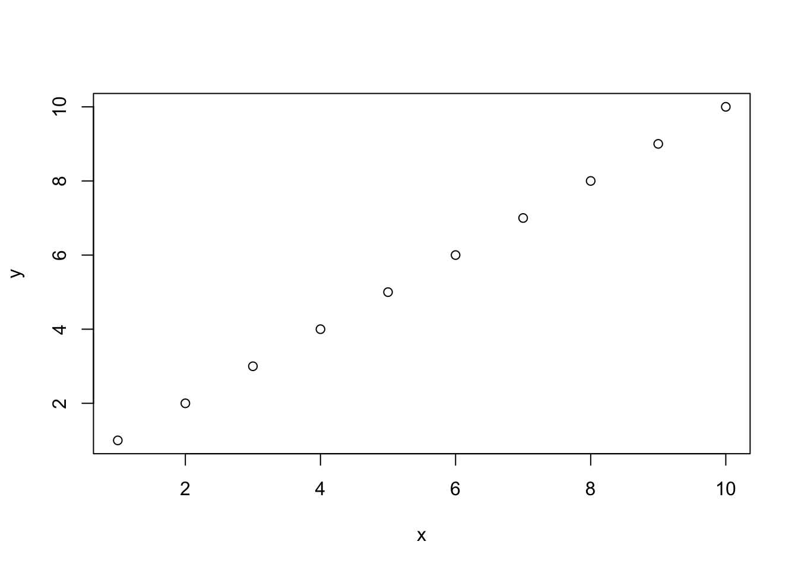
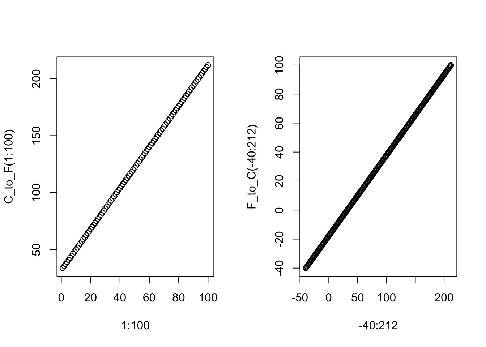

Last updated: 2018-10-29
workflowr checks: (Click a bullet for more information) ✖ R Markdown file: uncommitted changes
The R Markdown is untracked by Git. To know which version of the R Markdown file created these results, you’ll want to first commit it to the Git repo. If you’re still working on the analysis, you can ignore this warning. When you’re finished, you can run wflow_publish to commit the R Markdown file and build the HTML.
✔ Environment: empty
Great job! The global environment was empty. Objects defined in the global environment can affect the analysis in your R Markdown file in unknown ways. For reproduciblity it’s best to always run the code in an empty environment.
✔ Seed:
set.seed(20181026)
The command set.seed(20181026) was run prior to running the code in the R Markdown file. Setting a seed ensures that any results that rely on randomness, e.g. subsampling or permutations, are reproducible.
✔ Session information: recorded
Great job! Recording the operating system, R version, and package versions is critical for reproducibility.
✔ Repository version: 0d21361
wflow_publish or wflow_git_commit). workflowr only checks the R Markdown file, but you know if there are other scripts or data files that it depends on. Below is the status of the Git repository when the results were generated:
Ignored files:
Ignored: .DS_Store
Ignored: .RData
Ignored: .Rhistory
Ignored: analysis/.DS_Store
Untracked files:
Untracked: analysis/Lecture2_Rcode.R
Untracked: analysis/lecture1.Rmd
Untracked: analysis/lecture2.R
Untracked: analysis/lecture2.Rmd
Untracked: analysis/lecture2.rmd.R
Untracked: analysis/lecture3.Rmd
Untracked: docs/figure/
Unstaged changes:
Modified: analysis/index.Rmd
#------------------------------------------------------------------
## Working directories in R
#------------------------------------------------------------------
### What working directory are we in?
# getwd() ## Get working directory
# dir() ## What else is in that directory?
## Set working directory to a new place
# !!! You need to change this!
# setwd('/Users/raua/Desktop/PH718_AR/Lecture2')a prepared list of R commands that are processed sequentially by R from top to bottom and they can be typed, edited and saved as a file.
only exist for windows and mac, not in Unix or Linux operating systems.
Save R-script as “Lecture2_Rcode.R” to PH718 directory
File -> save as > folder
#### Enter the following lines
x <- 1:10
y <- 1:10
plot(x,y)
### Re-save this script
### Now run the source()command as below, without the ## in front.
##source("Lecture2_Rcode.R)source("path-to-the-folder/**.R")### Now try running, without the comment ### bars in front.
### Why do we get a "node stack overflow" error?
### Make a new folder in your PH718 directory called More_R_Commands.
### Create a new R script in that folder called "plot.R"
### Use the same 3 lines as above
### x <- 1:10
### y <- 1:10
### plot(x,y)
### Now run
### source("More_R_Commands/plot.R")
### Try the following commands
### objects()
### ls()
### rm(list=c("x", "y"))
### ls()#------------------------------------------------------------------
## Functions in R
#------------------------------------------------------------------
### Here is a simple example
example.sum <- function(a, b){
return(a + b)
}
x <- 1:10
y <- 11:20
example.sum(x,y) [1] 12 14 16 18 20 22 24 26 28 30### Naming conventions. Why not write example.sum() as:
example.sum <- function(x, y, z){
tmp <- x + y
tmp2 <- tmp + z
return(tmp2)
}
x <- 1:10
y <- 11:20
z <- 100
example.sum(x,y,z) [1] 112 114 116 118 120 122 124 126 128 130### Try this
example.diff.sum <- function(x, y){
newy = example.sum(x,y) - 10
return(newy)
}
example.diff.sum(x, y)### This function example.diff.sum() works, but it is very BAD form.
### Variable names can get complicated VERY quickly, if you're not
### conscientious about it. The following would be much easier to
### understand. Note: when possible, try to name your variables
### and functions informatively and in a manner that they are easy to track.
example.sum = function(a, b){
return(a + b)
}
example.diff.sum = function(c, d){
e = example.sum(c, d) - 10
return(e)
}
x <- 1:10
y <- 11:20
example.diff.sum(x, y) [1] 2 4 6 8 10 12 14 16 18 20## Example together: Hardy-Weinberg problem #3.6 from book
HWE <- function(p) {
stopifnot(is.numeric(p))
stopifnot(p >= 0)
stopifnot(p <= 1)
prob_AA <- p^2
prob_AB <- 2*p*(1-p)
prob_BB <- (1-p)^2
return(c(prob_AA, prob_AB, prob_BB))
}
HWE(0)[1] 0 0 1HWE(0.5)[1] 0.25 0.50 0.25#HWE(-5)
#HWE("andrea")## Write a function to convert Celsuis to Fahrenheit and vice versa
C_to_F <- function(temp) {
return((temp * 1.8) + 32)
}
F_to_C<- function(temp) {
return((temp - 32)/1.8)
}
par(mfrow=c(1,2))
plot(1:100, C_to_F(1:100))
plot(-40:212, F_to_C(-40:212))
## type_of_conversion can be "F_to_C" or "C_to_F"
temp_conversion <- function(temp, type_of_conversion="F_to_C") {
if(!type_of_conversion %in% c("F_to_C", "C_to_F")) {
stop("STOP!!! I only to C to F or F to C.")
}
if(type_of_conversion == "F_to_C") {
new_temp <- F_to_C(temp)
}
if(type_of_conversion == "C_to_F") {
new_temp <- C_to_F(temp)
}
return(list(temp=new_temp, conversion=type_of_conversion))
}
temp_conversion(100, type="C_to_F")$temp
[1] 212
$conversion
[1] "C_to_F"#------------------------------------------------------------------
## Loops in R
#------------------------------------------------------------------
#### An introductory example
### This "initializes" the object "w" so that R knows what w "stands for."
w <- NULL
#### This is called a "for" loop
for(i in 1:10){
w[i] <- i+10
}
### What do you think w looks like?
w [1] 11 12 13 14 15 16 17 18 19 20w <- NULL
for(hello in 1:10){
w[hello] <- hello
}
## Now what does w look like?
w [1] 1 2 3 4 5 6 7 8 9 10w <- NULL
counter <- 1
for(j in 11:20){
for(i in 1:10){
w[counter] <- i + j
counter <- counter + 1
}
}
#### Think through these two loops carefully.
#### What is the difference between this loop and the last loop?
w [1] 12 13 14 15 16 17 18 19 20 21 13 14 15 16 17 18 19 20 21 22 14 15 16
[24] 17 18 19 20 21 22 23 15 16 17 18 19 20 21 22 23 24 16 17 18 19 20 21
[47] 22 23 24 25 17 18 19 20 21 22 23 24 25 26 18 19 20 21 22 23 24 25 26
[70] 27 19 20 21 22 23 24 25 26 27 28 20 21 22 23 24 25 26 27 28 29 21 22
[93] 23 24 25 26 27 28 29 30w <- NULL
counter <- 1
for(j in 11:20){
for(i in 1:10){
w[counter] <- i + j
}
counter <- counter + 1
}
w [1] 21 22 23 24 25 26 27 28 29 30w <- 100
z <- 5
while(w > 20){
w.plus.z <- w + z
w <- w - 1
}
w[1] 20### Make sure that your loop can be "closed."
### The following loop willrun forever. DON'T actually run it!!!!!
#w <- 100
#z <- 5
#while(w > 20){
# w.plus.z <- w + z
# w <- w + 1
#} x <- rnorm(100)
x[1:10] [1] -0.12598866 -0.57737289 -0.01820977 0.25602522 1.12858682
[6] -0.78476041 -1.97086153 -0.41316941 -0.57988410 -1.08813897 x[20:30] [1] -0.290170121 -0.229558952 0.827089347 -0.444364456 0.212571808
[6] 1.568327048 -0.005478409 -0.771890959 -0.583246151 1.044368800
[11] 0.434598790 index <- which(x < 0)
x[index] [1] -0.125988658 -0.577372888 -0.018209774 -0.784760412 -1.970861530
[6] -0.413169410 -0.579884096 -1.088138969 -0.131820049 -0.401212936
[11] -0.290170121 -0.229558952 -0.444364456 -0.005478409 -0.771890959
[16] -0.583246151 -1.567065917 -0.154372301 -0.942540670 -2.158801543
[21] -0.458669909 -2.022700418 -1.287869976 -0.151628695 -0.259360191
[26] -0.343993517 -1.760983261 -0.141146481 -1.256357749 -0.619715345
[31] -0.163804062 -0.678671207 -1.530963569 -0.294261219 -1.156795738
[36] -0.587257505 -1.686297423 -0.110220171 -1.144582785 -0.163459293
[41] -0.534648250 -0.304997265 -0.124441464 -0.258255942 -1.043690940
[46] -0.471939112 -0.890771589sessionInfo()R version 3.5.1 (2018-07-02)
Platform: x86_64-apple-darwin15.6.0 (64-bit)
Running under: macOS High Sierra 10.13.6
Matrix products: default
BLAS: /Library/Frameworks/R.framework/Versions/3.5/Resources/lib/libRblas.0.dylib
LAPACK: /Library/Frameworks/R.framework/Versions/3.5/Resources/lib/libRlapack.dylib
locale:
[1] en_US.UTF-8/en_US.UTF-8/en_US.UTF-8/C/en_US.UTF-8/en_US.UTF-8
attached base packages:
[1] stats graphics grDevices utils datasets methods base
loaded via a namespace (and not attached):
[1] workflowr_1.1.1 Rcpp_0.12.19 digest_0.6.18
[4] rprojroot_1.3-2 R.methodsS3_1.7.1 backports_1.1.2
[7] magrittr_1.5 git2r_0.23.0 evaluate_0.12
[10] stringi_1.2.4 whisker_0.3-2 R.oo_1.22.0
[13] R.utils_2.7.0 rmarkdown_1.10 tools_3.5.1
[16] stringr_1.3.1 yaml_2.2.0 compiler_3.5.1
[19] htmltools_0.3.6 knitr_1.20 This reproducible R Markdown analysis was created with workflowr 1.1.1